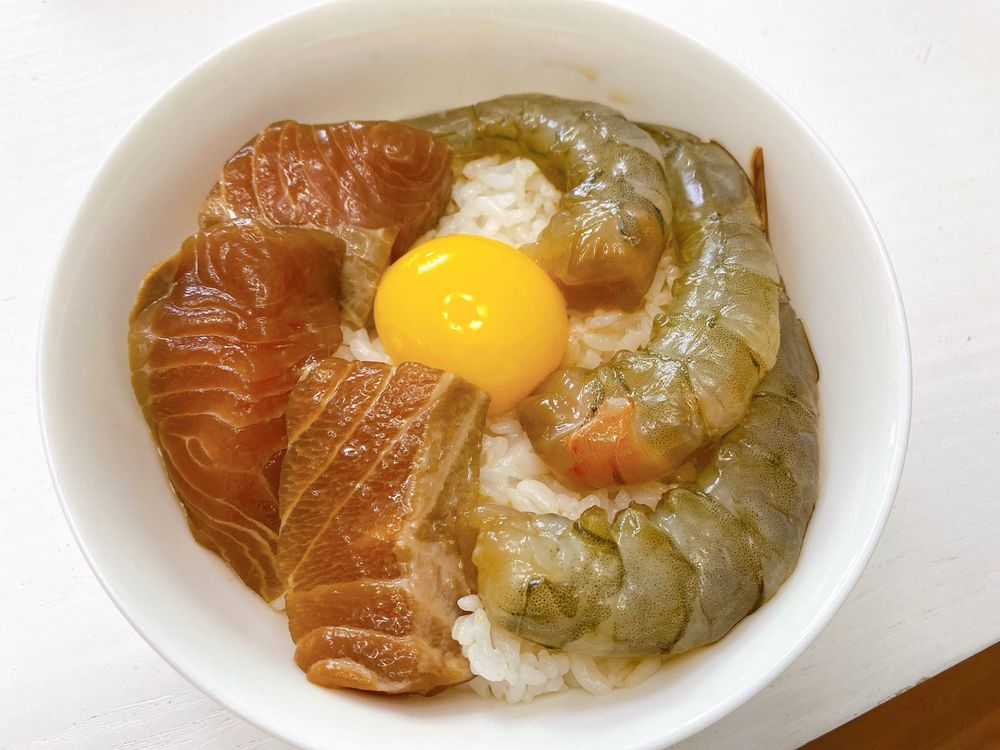

잘잤어요??
난 많이는 못잤는데 푹 잤당 ㅎㅎ
맛있는 새우장 연어장도 먹고 너무 좋다 ㅎㅎ
동생이 같이 개임 하자고 하니까 온라인으로 하고 난 콘서트 연습 해야겠당😊
조금 전부터 동생이랑 계속 톡 하고 있어요ㅎㅎ
뭔가 동생이 점점 어른이 되가고 있는걸 느끼네요 ㅠㅠㅠㅎㅎㅎㅎ
昨日はぐっすり寝れたかな？
なこは、いっぱいは寝れなかったけど、ぐっすり寝れた😊
エビとサーモンの醤油漬け食べて、今からは妹がゲームしよって言うから、オンラインでゲームしてから、コンサートの練習しようかと！
最近ほぼ毎日妹と連絡とってる♡
なんか、少しずつ大人になっていくのが感じられる😭感動😭
짠!!じゃん！
새우장이랑 연어장 ㅎㅎ
